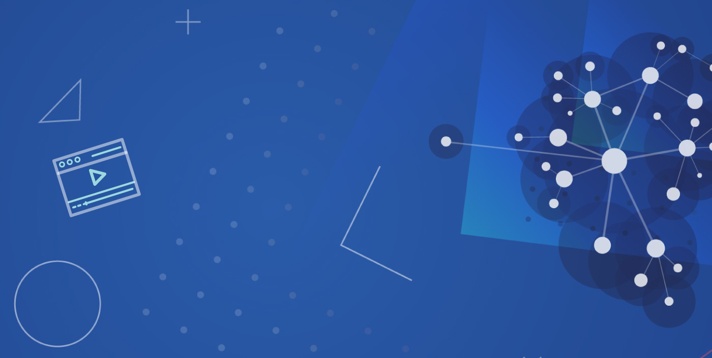

Como você observou, o ensino médio no Brasil, desde os anos 1980, tem sido ofertado em apenas duas possibilidades: ensino médio geral (ou propedêutico) e ensino técnico de nível médio.

É importante destacar que o ensino técnico de nível médio tem cerca de dez por cento das matrículas do total de estudantes na faixa etária do ensino médio. Para comparação: nos países ditos desenvolvidos o técnico corresponde à metade das matrículas do ensino médio.
Como a maioria dos alunos que concluem o ensino médio não ingressam no ensino superior, há muito tempo se vem questionando que opções esse aluno tem? Se conclui o ensino médio que o prepara para a faculdade, mas para lá não vai?...
A proposta do novo Ensino Médio surge como resposta a tais desafios. Assista ao vídeo a seguir e procure refletir nos possíveis impactos dessa reformulação curricular no processo de escolha de nossos alunos.
Novo Ensino Médio
